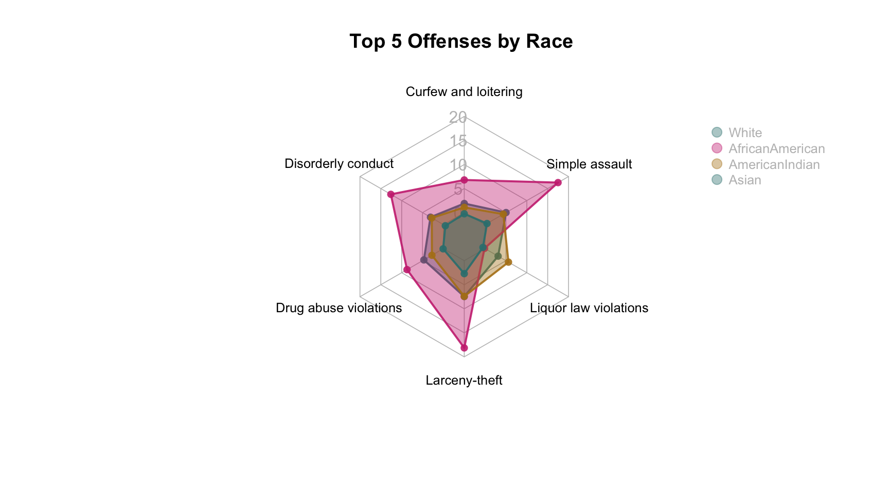
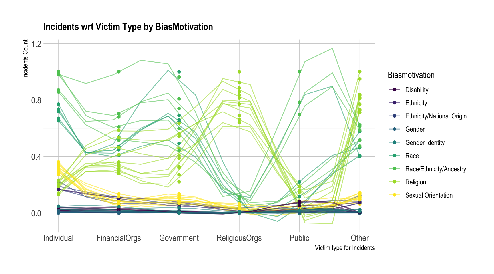

Chapter 5 Results
5.1 Juvenile Arrest Records
5.1.1 Juvenile Crimes Spread Over the Years
 We can analyze incidents of various types of crime by gender. From this we can infer the most frequent crimes committed by Males and Females. While Simple Assault, Larceny-Theft and Loitering are frequent for both demographics, Males have higher number and spread for Drug Abuse violations and Burglaries while women have more spread in Liquor Law violations and Disorderly Conduct.
Higher spreads can be seen for crimes like Larceny-Theft and Running away, which indicates a huge change during the 10 years. However spreads for more serious crimes like aggravated assaults is lower, indicating that the numbers have not changed much through the years. While we can see this change, we cannot see when it was high/low.
We can analyze incidents of various types of crime by gender. From this we can infer the most frequent crimes committed by Males and Females. While Simple Assault, Larceny-Theft and Loitering are frequent for both demographics, Males have higher number and spread for Drug Abuse violations and Burglaries while women have more spread in Liquor Law violations and Disorderly Conduct.
Higher spreads can be seen for crimes like Larceny-Theft and Running away, which indicates a huge change during the 10 years. However spreads for more serious crimes like aggravated assaults is lower, indicating that the numbers have not changed much through the years. While we can see this change, we cannot see when it was high/low.

From the above plots we can see the various crimes which are high for a particular demographic. Here we focus on the types crimes committed by offenders of different races. We can see that larceny-theft is the most common type of offense for all demographics. However, other type of offenses are not similar for every demographic. We can see that White and African American population have more spread in Drug Abuse violations than American Indian and Asian people. This indicates a rise in drug abuse in these communities. While drug abuse is common in American Indians, the spread is not high, indicating that annual incidents are similar throughout the years. Liquor Law violations are also more in number of American Indians as compared to White and African American population which have higher Simple Assaults and Disorderly conducts.
5.1.2 Juvenile Crimes HeatMap by Gender
From the above heatmap we can analyse the various categories of crimes committed by minors faceted over gender. For crimes like Larceny, Drug Abuse, Liquor Law violation and Simple Assault, the number of crimes conducted by males significantly higher than those conducted by females.
However, in the recent years the number of such crimes among females seem to rise as well as indicated by the thickness of the heatmap on the top left.
The number of instances of offenses of arson, driving under influence are approximately the same over the years for both the genders.
5.1.3 Juvenile Crimes HeatMap by Race

The above heatmaps shows us the number of crimes committed by minors from different ethnic and racial backgrounds. We can observe that the highest number of crimes are committed by minors who identify as African Americans or Blacks. This is a quite interesting observation since in the above plots we have seen that the majority of hate crimes by ethnicity bias were against Black Individuals. This gives a sense of inherent “corrective bias” or aggravation in young individuals as a response to the hate crimes committed against their community over the years.
5.1.4 Top Juvenile Crimes by Gender

The above Radar charts give us a better spatial outlook of the number of crimes (top 5) committed by minors belonging to a particular gender.
5.1.5 Top Juvenile Crimes by Race

The above Radar charts give us a better spatial outlook of the number of crimes (top 5) committed by minors belonging to a particular race.
5.2 Gun Violence Arhive
5.2.1 Mass Shootings i Top 10 States
 The clear outlier for this plot can be seen in 2017 for the state of Nevada, when the 2017 Las Vegas Stephen Paddock Mass shooting took place. We can see a general increasing trend in all the states with higher increase in Illinois from 2018-2020.
The clear outlier for this plot can be seen in 2017 for the state of Nevada, when the 2017 Las Vegas Stephen Paddock Mass shooting took place. We can see a general increasing trend in all the states with higher increase in Illinois from 2018-2020.
## NULL## NULL5.3 Most frequent places for hatecrime

We use a Cleveland dot plot for finding out the places where a hate crime happens more frequently. This can helps us understand if it’s just the unavailability of sufficient surveillance or any other motivation that makes these location more prone to such crimes. Thus we can take measures to strengthen the public security in these places.
We can observe that the top 4 spots for hate motivated crimes are:
- Residential Areas
- Roads
- Schools
- Parking Lots
The number of crimes observed in these areas over the last decade far outweigh the incidents observed in other locations such has hotels or grocery store.
Residential areas being the most frequent spots can let us to the assumption that a large portion of these crimes are committed by individuals due to their bias towards particular people rather than a group perhaps due to the ease of attacking small number rather than going for a large riot.
The presence of schools/colleges corroborates our concerns of the rise of intolerance in the youth especially the teenagers who tend to be easily carried away by agendas propagated on social media platforms like Twitter, Facebook or Instagram.
Recent Instance:
The existence of large number of such crimes in parking spots/garage might suggest that there is a lack of sufficient security or surveillance for these areas usually spread across several acres or on the secluded portions of a building/store might need some reinforcement.
Recent Instance:
5.4 Rate of Crimes over the years
We can observe from the above time series data, that the total number of hate crimes were on a decline till 2013 (i.e President Obama’s second run for office). However it started rising again significantly from 2016 especially leading to a sharp increase (much more than what was observed in the previous decade) by 2017. This was the time during which Donald Trump Jr. was running for the office of US President. This insight might suggest a correlation between the change of political behavior of the administration and the number of occurrences of hate crimes.
Recent Instance:
NYT Article on the rise of hate crime violene during Trump Administration
Another striking observation is the sudden drop in crime against property (i.e vandalism) during the Trump Administration.
In the above time series plot of the rates of different types of crimes over the last decade,we can see that instances of Simple Assault have remained the almost the same showing some evidence for an inherent presence of bias to harm others based on an identity within a portion of the population. This can be looked upon as a social issue that needs large scale reformation of how people perceive others in general and changes in education might help to mitigate it.
Furthermore, we can see that there is a sharp rise in robbery motivated by some kind of bias after 2018 (during Trump Administration) while the instances of vandalism took a sharp decline.
5.5 Hate Crime Offenders by age

From the above stacked bar plots, we can infer that the number of hate crimes committed by adults increased to almost 3 folds between 2013 to 2019.
Although the number of hate crime offenses by minors remain low compared to the number of hate crimes committed by adults, there is a gradual increase in the numbers which was also hinted by rise in number of hate crimes observed in schools/colleges in the first graph.
5.6 Hate Crime by Bias towards a gender
From the above plot, we can infer that in general, the crimes committed against women due to a bias are much larger in number compared to hate crime committed against women.
However between 2017-2019, we can see a significant rise in hate crimes against men. This may not be purely due to their identification as a male but have additional correlation to their sexual orientation (perhaps a rise in homophobia).
5.7 Hate Crime by Bias towards a particular ethnicity
It can be inferred that over the last decade a bias towards Black individuals has been significantly higher than the hate crimes towards other races. Although this necessarily does not imply the limited bias towards other races. This has an underlying factor of the portion of the population which is non-white in the US among which the Black Community comprised the largest part.

In the above plot we can see the proportions of incidents of biased hate crime against certain victims. We can see that Gender Identity, Sexual Orientation and Race are higher against individuals and lower against religious organisations. Religious organisation obviously have more crimes motivated by religious bias. Financial Organisations and Public Violations are also more due to bias against Gender, Race and Religion